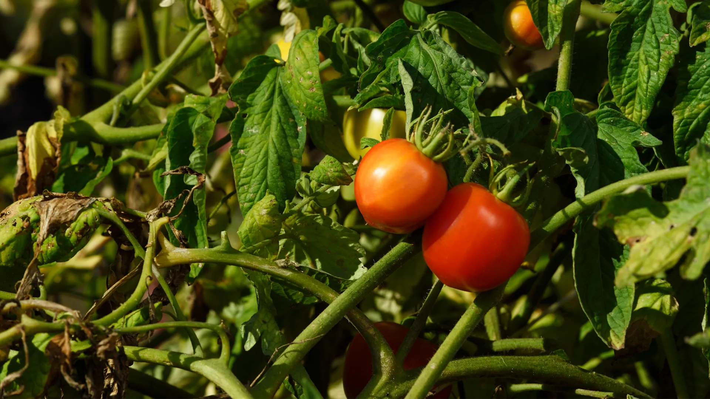
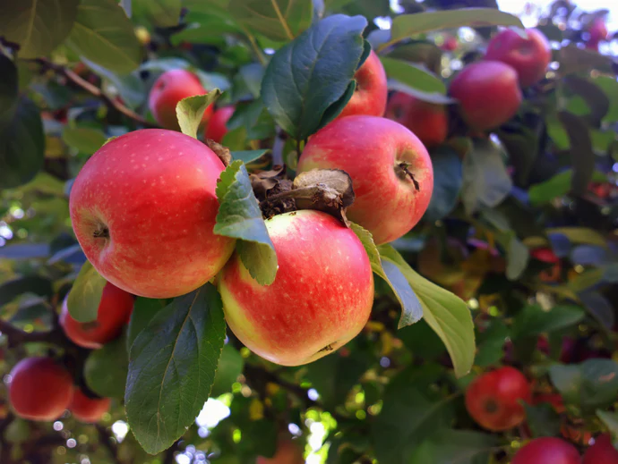

Plant Health
75% Healthy
Most of your plants are doing well
Recent Activity
75
Total Scans
2
Days Ago
Your garden is actively monitored
Weather
24°C
Partly Cloudy
Good conditions for plant growth
Garden Tasks
Water Plants
Completed
Apply Treatment
Pending
1 task pending for today
Plant Health Status
Healthy
46
0.03%
Plants with no detected issues
Warning
15
15.03%
Plants showing early signs of issues
Critical
5
2.5%
Plants requiring immediate attention
Treated
24
8.5%
Plants under active treatment
Recent Scans
Your latest plant health checks

Healthy
Critical
Healthy

Warning
Common Diseases
Most frequent plant issues in your garden
Early Blight
80%
Common in tomatoes and potatoes
Late Blight
65%
Severe disease affecting potatoes
Leaf Spot
50%
Affects various plants and vegetables
Powdery Mildew
40%
Common in dry conditions with high humidity